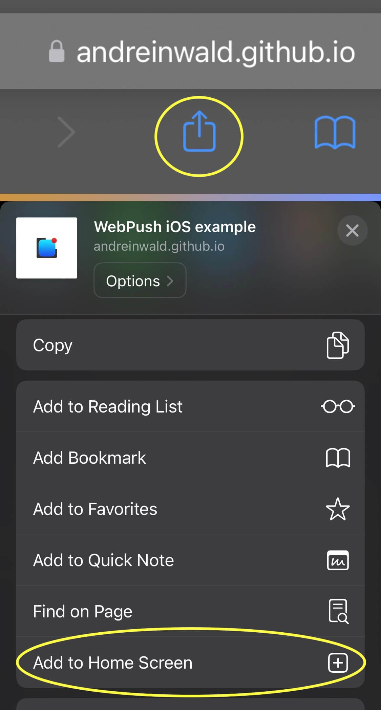

WebPush iOS example 123
For WebPush work you may need to add this website to Home Screen at your iPhone or iPad (window.navigator is
not
standalone).

Open this page at your: iPhone / iPad / Android

Code of this page